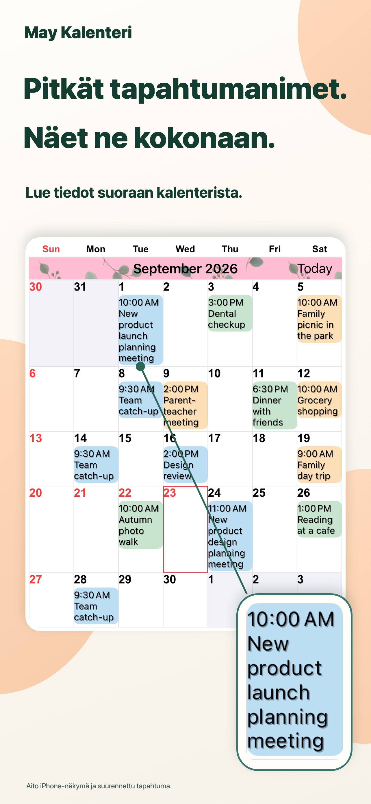
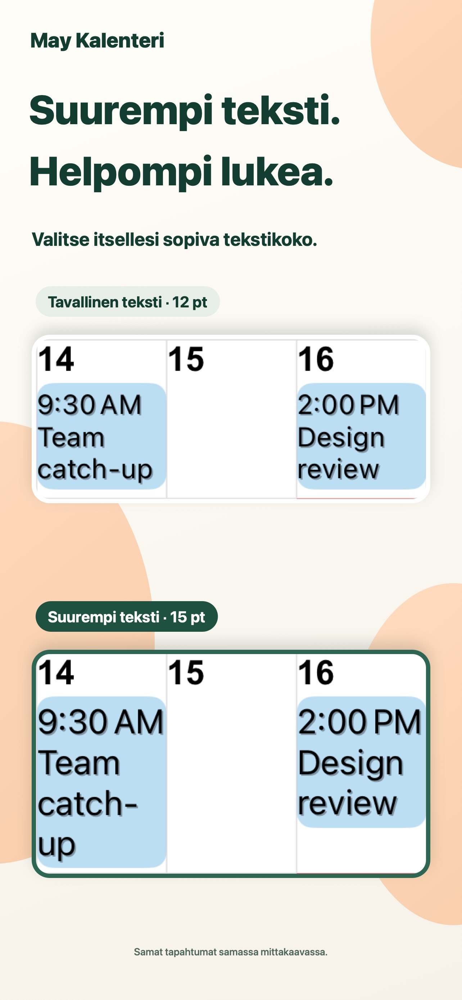
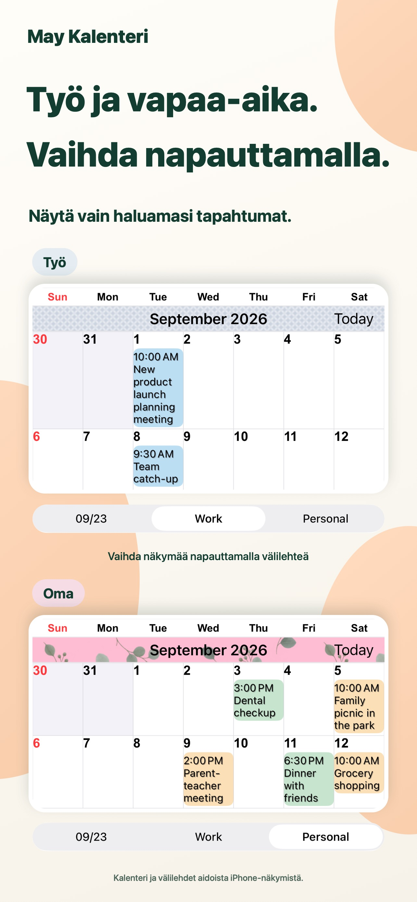
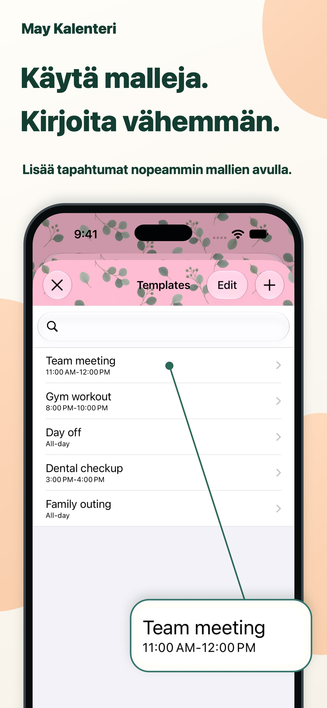

Omannäköinen kalenteri.
Yhdistele teeman värejä, tapahtumien taustoja ja kuvioita.
Selkeämpi näkymä jokaiseen päivään.
Pitkät tapahtumien nimet suoraan kuukausinäkymässä. Teksti ja värit omaan makuusi, jotta näet arkesi yhdellä silmäyksellä.
iPhonelle ja iPadilleKatso App StoressaIlmainen lataus · Apin sisäisiä ostoja

Hieman helpompaa arjen suunnittelua.
Työ ja vapaa-aika samassa paikassa.ARKESI TUEKSI
Muokkaa kalenteri omaan suunnittelutapaasi.
Pitkät nimet rivittyvät usealle riville. Säädä fonttia ja tekstikokoa, jotta näet yksityiskohdat ja koko kuukauden samalla kertaa.

Tallenna kalenteriyhdistelmiä ja vaihda työ- ja henkilökohtaisten menojen välillä yhdellä napautuksella.

Tallenna kokoukset, liikunta ja vastaanottoajat malleiksi. Kaksoisnapauta päivää ja valitse malli lisätäksesi tapahtuman.

PIENET YKSITYISKOHDAT MERKITSEVÄT.
Yhdistele teeman värejä, tapahtumien taustoja ja kuvioita.
Valitse 20 widget-tyypistä. Mukana on myös vain iPadille tarkoitettuja widgettejä.
Näytä vain kirjoittamaasi tekstiä vastaavat tapahtumat.
KYSYMYKSIÄ JA VASTAUKSIA
Lataaminen on ilmaista, ja apissa on sisäisiä ostoja. Tarkista ajantasaiset hinnat ja ostovaihtoehdot App Storesta. Katso App Storessa
Kyllä, iPhonella ja iPadilla. Osa widgeteistä on vain iPadille. Tarkista käyttöjärjestelmävaatimukset App Storesta.
Appi tukee muistutuksia, pyhäpäiviä, viikkonumeroita ja kuukalenterin tietoja. Voit myös asettaa viikon aloituspäivän ja aikavyöhykkeen.
Ilmoitukset tulevat Applen Kalenteri-apista. Voit asettaa hälytyksiä ennen tapahtuman alkua tai loppua.
SELKEÄMPIÄ PÄIVIÄ.
Aloita kalenterilla, joka sopii sinulle.